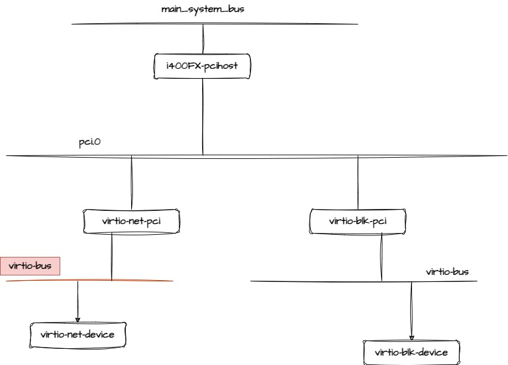

Qemu: Virtio_bus¶
Create Virtio-Bus¶
virtio-bus创建是在 virtio_pci_realize 函数中，在创建virtio_net_pci设备之前
static void virtio_pci_realize(PCIDevice *pci_dev, Error **errp)
{
VirtIOPCIProxy *proxy = VIRTIO_PCI(pci_dev);
VirtioPCIClass *k = VIRTIO_PCI_GET_CLASS(pci_dev);
...
...
...
virtio_pci_bus_new(&proxy->bus, sizeof(proxy->bus), proxy);
...
...
}
virtio_pci_realize 调用 virtio_pci_bus_new
static void virtio_pci_bus_new(VirtioBusState *bus, size_t bus_size,
VirtIOPCIProxy *dev)
{
DeviceState *qdev = DEVICE(dev);
char virtio_bus_name[] = "virtio-bus";
qbus_create_inplace(bus, bus_size, TYPE_VIRTIO_PCI_BUS, qdev,
virtio_bus_name);
}
A VirtIODevice is being plugged¶
virtio设备创建完成后，需要将此设备添加到virtio-bus中去，
refer to: virtio_device_realize
virtio_bus_device_plugged¶
virtio_bus_device_plugged主要调用了VirtioBusClass类型的device_plugged回调函数，
该回调函数在virtio_pci_bus_class_init被初始化成 virtio_pci_device_plugged
void virtio_bus_device_plugged(VirtIODevice *vdev, Error **errp)
{
DeviceState *qdev = DEVICE(vdev);
BusState *qbus = BUS(qdev_get_parent_bus(qdev));
VirtioBusState *bus = VIRTIO_BUS(qbus);
VirtioBusClass *klass = VIRTIO_BUS_GET_CLASS(bus);
VirtioDeviceClass *vdc = VIRTIO_DEVICE_GET_CLASS(vdev);
bool has_iommu = virtio_host_has_feature(vdev, VIRTIO_F_IOMMU_PLATFORM);
Error *local_err = NULL;
DPRINTF("%s: plug device.\n", qbus->name);
if (klass->pre_plugged != NULL) {
klass->pre_plugged(qbus->parent, &local_err);
if (local_err) {
error_propagate(errp, local_err);
return;
}
}
/* Get the features of the plugged device. */
assert(vdc->get_features != NULL);
vdev->host_features = vdc->get_features(vdev, vdev->host_features,
&local_err);
if (local_err) {
error_propagate(errp, local_err);
return;
}
if (klass->device_plugged != NULL) {
klass->device_plugged(qbus->parent, &local_err);
}
if (local_err) {
error_propagate(errp, local_err);
return;
}
if (klass->get_dma_as != NULL && has_iommu) {
virtio_add_feature(&vdev->host_features, VIRTIO_F_IOMMU_PLATFORM);
vdev->dma_as = klass->get_dma_as(qbus->parent);
} else {
vdev->dma_as = &address_space_memory;
}
}
virtio_pci_device_plugged¶
/* This is called by virtio-bus just after the device is plugged. */
static void virtio_pci_device_plugged(DeviceState *d, Error **errp)
{
VirtIOPCIProxy *proxy = VIRTIO_PCI(d);
VirtioBusState *bus = &proxy->bus;
bool legacy = virtio_pci_legacy(proxy);
bool modern;
bool modern_pio = proxy->flags & VIRTIO_PCI_FLAG_MODERN_PIO_NOTIFY;
uint8_t *config;
uint32_t size;
VirtIODevice *vdev = virtio_bus_get_device(&proxy->bus);
/*
* Virtio capabilities present without
* VIRTIO_F_VERSION_1 confuses guests
*/
if (!proxy->ignore_backend_features &&
!virtio_has_feature(vdev->host_features, VIRTIO_F_VERSION_1)) {
virtio_pci_disable_modern(proxy);
if (!legacy) {
error_setg(errp, "Device doesn't support modern mode, and legacy"
" mode is disabled");
error_append_hint(errp, "Set disable-legacy to off\n");
return;
}
}
modern = virtio_pci_modern(proxy);
config = proxy->pci_dev.config;
if (proxy->class_code) {
pci_config_set_class(config, proxy->class_code);
}
if (legacy) {
if (virtio_host_has_feature(vdev, VIRTIO_F_IOMMU_PLATFORM)) {
error_setg(errp, "VIRTIO_F_IOMMU_PLATFORM was supported by"
" neither legacy nor transitional device");
return ;
}
/*
* Legacy and transitional devices use specific subsystem IDs.
* Note that the subsystem vendor ID (config + PCI_SUBSYSTEM_VENDOR_ID)
* is set to PCI_SUBVENDOR_ID_REDHAT_QUMRANET by default.
*/
pci_set_word(config + PCI_SUBSYSTEM_ID, virtio_bus_get_vdev_id(bus));
} else {
/* pure virtio-1.0 */
pci_set_word(config + PCI_VENDOR_ID,
PCI_VENDOR_ID_REDHAT_QUMRANET);
pci_set_word(config + PCI_DEVICE_ID,
0x1040 + virtio_bus_get_vdev_id(bus));
pci_config_set_revision(config, 1);
}
config[PCI_INTERRUPT_PIN] = 1;
if (modern) {
struct virtio_pci_cap cap = {
.cap_len = sizeof cap,
};
struct virtio_pci_notify_cap notify = {
.cap.cap_len = sizeof notify,
.notify_off_multiplier =
cpu_to_le32(virtio_pci_queue_mem_mult(proxy)),
};
struct virtio_pci_cfg_cap cfg = {
.cap.cap_len = sizeof cfg,
.cap.cfg_type = VIRTIO_PCI_CAP_PCI_CFG,
};
struct virtio_pci_notify_cap notify_pio = {
.cap.cap_len = sizeof notify,
.notify_off_multiplier = cpu_to_le32(0x0),
};
struct virtio_pci_cfg_cap *cfg_mask;
virtio_pci_modern_regions_init(proxy);
virtio_pci_modern_mem_region_map(proxy, &proxy->common, &cap);
virtio_pci_modern_mem_region_map(proxy, &proxy->isr, &cap);
virtio_pci_modern_mem_region_map(proxy, &proxy->device, &cap);
virtio_pci_modern_mem_region_map(proxy, &proxy->notify, ¬ify.cap);
if (modern_pio) {
memory_region_init(&proxy->io_bar, OBJECT(proxy),
"virtio-pci-io", 0x4);
pci_register_bar(&proxy->pci_dev, proxy->modern_io_bar_idx,
PCI_BASE_ADDRESS_SPACE_IO, &proxy->io_bar);
virtio_pci_modern_io_region_map(proxy, &proxy->notify_pio,
¬ify_pio.cap);
}
pci_register_bar(&proxy->pci_dev, proxy->modern_mem_bar_idx,
PCI_BASE_ADDRESS_SPACE_MEMORY |
PCI_BASE_ADDRESS_MEM_PREFETCH |
PCI_BASE_ADDRESS_MEM_TYPE_64,
&proxy->modern_bar);
proxy->config_cap = virtio_pci_add_mem_cap(proxy, &cfg.cap);
cfg_mask = (void *)(proxy->pci_dev.wmask + proxy->config_cap);
pci_set_byte(&cfg_mask->cap.bar, ~0x0);
pci_set_long((uint8_t *)&cfg_mask->cap.offset, ~0x0);
pci_set_long((uint8_t *)&cfg_mask->cap.length, ~0x0);
pci_set_long(cfg_mask->pci_cfg_data, ~0x0);
}
if (proxy->nvectors) {
int err = msix_init_exclusive_bar(&proxy->pci_dev, proxy->nvectors,
proxy->msix_bar_idx, NULL);
if (err) {
/* Notice when a system that supports MSIx can't initialize it */
if (err != -ENOTSUP) {
warn_report("unable to init msix vectors to %" PRIu32,
proxy->nvectors);
}
proxy->nvectors = 0;
}
}
proxy->pci_dev.config_write = virtio_write_config;
proxy->pci_dev.config_read = virtio_read_config;
if (legacy) {
size = VIRTIO_PCI_REGION_SIZE(&proxy->pci_dev)
+ virtio_bus_get_vdev_config_len(bus);
size = pow2ceil(size);
memory_region_init_io(&proxy->bar, OBJECT(proxy),
&virtio_pci_config_ops,
proxy, "virtio-pci", size);
pci_register_bar(&proxy->pci_dev, proxy->legacy_io_bar_idx,
PCI_BASE_ADDRESS_SPACE_IO, &proxy->bar);
}
}